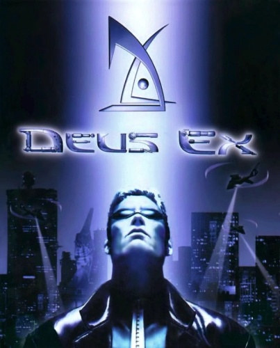

Game review by : DannyV_El_Acme
Year : 2000
Developer : Ion Storm
Degree of Cyberpunk visuals : Very High
Correlation to Cyberpunk themes : Very High
Rating : 10/10

Introduction: before the after effects of Daikatana ruined the development house, Ion Storm managed to make one last great game. Created by Warren Spector and crew, the creative geniuses behind cult-favorite game System Shock, Deus Ex is an absolute gaming masterpiece, and in this reviewer's humble opinion, the absolute greatest cyberpunk game ever made.
The story: the time is the 2050s. The world is at the mercy of a pandemic disease known as Grey Death, and the United States is under attack by a terrorist organization known as the National Secessionist Forces. To combat this and other terrorist threats, the United Nations have formed UNATCO, the United Nations Anti-Terrorist Coalition. Players take the role of JC Denton, the newest active agent of UNATCO, and one of only two next-generation nanomachine enhanced agents, scheduled to replace the old cyberneticaly enhanced agents with their more subtle and advanced enhancements. His first assigned task is the elimination of the NSF.
However, things are not what they seem, and a grand conspiracy is at work involving secret organizations, governments, corporations, Grey Death, criminal groups, the NSF, and even UNATCO. Slowly, JC realizes he is a pawn in a worldwide game of intrigue. What side will he choose, what mysteries will unfold, who can he trust?
The game: I deliberately left story details vague, since this game's story is quite simply one of the absolute greatest cyberpunk stories ever. Not to mention that it's impossible to summarize the game's story, since it's so variable. Simply put, the amount of freedom of choice available in this game is staggering. From how you develop your character, to how to tackle enemies (if you REALLY wanna tackle them, you can also use stealth to go through enemy infested areas), and even moral choices during conversations, this game definitely delivers on the promise of never playing the game the same way twice. While at its core a first person shooter, Deus Ex's emphasis on story and its experience gaining system also make it qualify as an RPG, and it has won awards on both categories.
The game rewards exploration and creativity when it comes to solving its many situations. For example, while it's nice and good to run into a room guns blasting, using stealth to pick your enemies off silently or sneaking your way through may help you save ammo and health. Even your choice of weapons gives you lots of liberty in choice, from heavy-duty death dealing machines, to more stealthy melee and hand projectiles, and even non-lethal weapons. Players can even find nanomachine enhancements, giving you superhuman abilities like night vision, speeded healing, and even Matrix-style jumping capability.
By using experience points, players can improve different skills like Computers(allows you to hack into computer mainframes), Electronics (bypassing security systems and electronic doorlocks), Swimming, and multiple Weapons skills. Raising skills has instant, noticeable impact on your game. For example, raising your Computers skill not only allows you to hack into a system faster, it gives you more time to mess with the system after successfully hacking in, and with time it even allows you access to more advanced security features, like reprogramming turrets to attack your enemies. All these options allow you to tailor your game to your playing style. Do you like to blast the crap out of your enemies? Raise your Weapons and Medicine skills. Do you prefer stealthy approaches? Raise Hacking, Electronics and Lockpicking. Would you rather explore alternate routes? Raise you Environmental and Swimming skills. Truly, the amount of options available is incredible.
Although a little dated now, the graphics are still awesome, and the environments would look right at home in any William Gibson or Philip K. Dick novel. The music is perfectly atmospheric, sound effects are loud and in your face, and it actually has pretty good (or at least not cringe-inducing) voice acting. JC in particular has that cool, deep and raspy voice expected of a cyberpunk protagonist.
The verdict : I truly have not played a cyberpunk game as amazing as Deus Ex, before or since. The game delivers on every level, giving you one of the most complete, exciting and ultimately entertaining gaming experiences ever. Both as a game and as a cyberpunk story, Deus Ex gets a perfect ten stars.